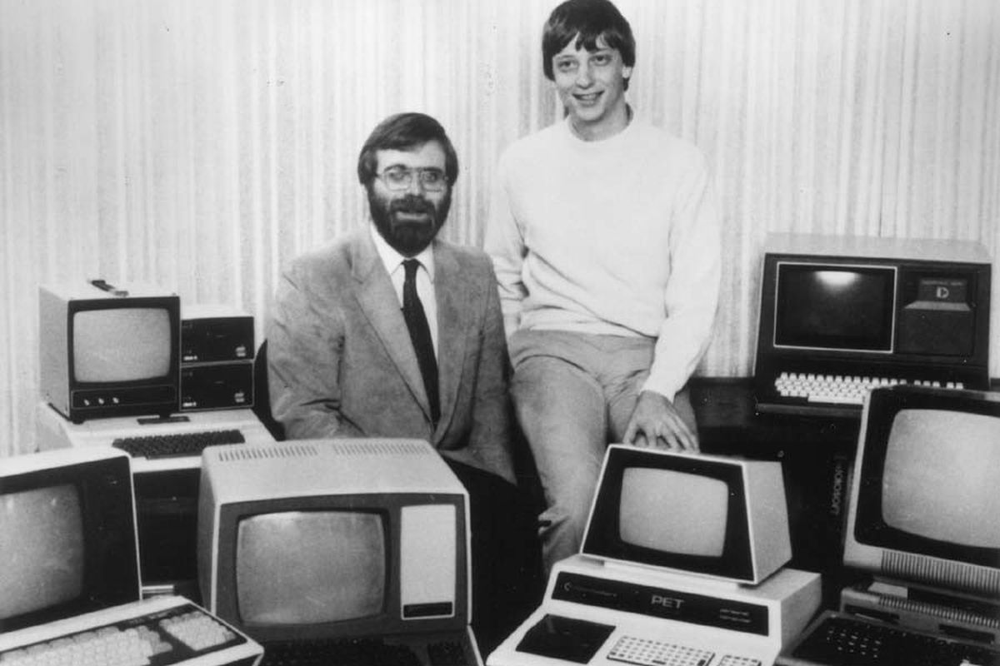
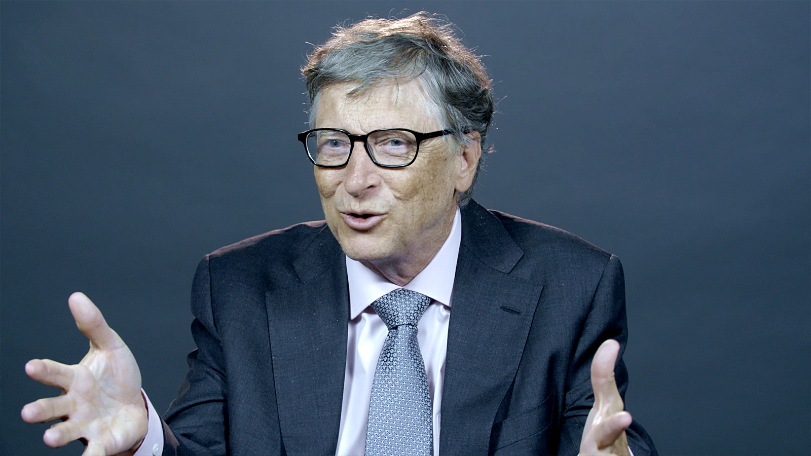

Sobre a Microsoft
Microsoft Corporation (NASDAQ: MSFT)[7] é uma empresa transnacional americana com sede em Redmond, Washington, que desenvolve, fabrica, licencia, apoia e vende softwares de computador, produtos eletrônicos, computadores e serviços pessoais. Entre seus produtos de software mais conhecidos estão as linhas de sistemas operacionais Windows, a linha de aplicativos para escritório Office e o navegador Internet Explorer. Entre seus principais produtos de hardware estão os consoles de videogame Xbox, a série de tablets Surface e os Smartphones Microsoft Lumia, antiga Nokia.[8] É a maior produtora de softwares do mundo por faturamento,[9] e uma das empresas mais valiosas do mundo.[10]
A Microsoft foi fundada por Bill Gates e Paul Allen em 4 de abril de 1975 para desenvolver e vender interpretadores BASIC para o Altair 8800. A empresa posteriormente iria dominar o mercado de sistemas operacionais de computadores pessoais com o MS-DOS, em meados da década de 1980, seguido pelo Microsoft Windows. A oferta pública inicial da empresa, em 1986, e o subsequente aumento no preço de suas ações, tornou bilionários e milionários cerca de um terço dos 12 mil funcionários da Microsoft. É considerada a terceira empresa startup de maior sucesso de todos os tempos em termos de capitalização de mercado, receita, crescimento e impacto cultural.[11] Desde os anos 1990, tem diversificado cada vez mais o mercado de sistemas operacionais e tem feito uma série de aquisições de empresas. Em maio de 2011, a Microsoft adquiriu a Skype Technologies por 8,5 bilhões de dólares, em sua maior aquisição até aquela data. Em 2014 também finalizou a compra da fabricante de celulares Nokia.[12]

Fundador
Gates nasceu em uma família de classe média de Seattle. Seu pai, William H. Gates, era advogado de grandes empresas, e sua mãe, Mary Maxwell Gates, foi professora da Universidade de Washington e diretora de bancos. Bill Gates e as suas duas irmãs, Kristanne e Libby, frequentaram as melhores escolas particulares de sua cidade natal, e Bill também participou do Movimento Escoteiro ainda quando jovem. Bill Gates,[10] foi admitido na prestigiosa Universidade Harvard, (conseguindo 1590 SATs dos 1600 possíveis[11]) mas abandonou os cursos de Matemática e Direito no terceiro ano [12], para dedicar-se à Microsoft. Trabalhou na Taito com o desenvolvimento de software básico para máquinas de jogos eletrônicos (fliperamas) até seus 16 anos. Também trabalhou como pesquisador visitante na University of Massachusetts at Amherst, UMASS, Estados Unidos, quando com 17 anos, desenvolveu junto com Paul Allen um software para leitura de fitas magnéticas, com informações de tráfego de veículos, em um chip Intel 8008. Com esse produto, Gates e Allen criaram uma empresa, a Traf-o-Data, porém os clientes desistiram do negócio quando descobriram a idade dos donos. Enquanto estudavam em Harvard, os jovens desenvolveram um interpretador da linguagem BASIC para um dos primeiros computadores pessoais a serem lançado nos Estados Unidos - o Altair 8800. Após um modesto sucesso na comercialização deste produto, Gates e Allen fundaram a Microsoft, uma das primeiras empresas no mundo focadas exclusivamente no mercado de programas para computadores pessoais ou PCs. Gates adquiriu ao longo dos anos uma fama de visionário (apostou no mercado de software na época em que o hardware era considerado muito mais valioso) e de negociador agressivo, chegando muitas vezes a ser acusado por concorrentes da Microsoft de utilizar práticas comerciais desleais.
Equipe
Bill Gates
Fundador
Paull Allen
Fundador
Steve Ballmer
Co-Fundador
Satia Nadella
CEO